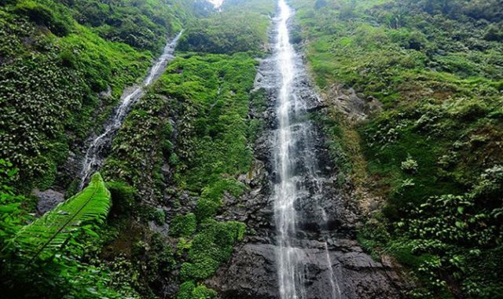
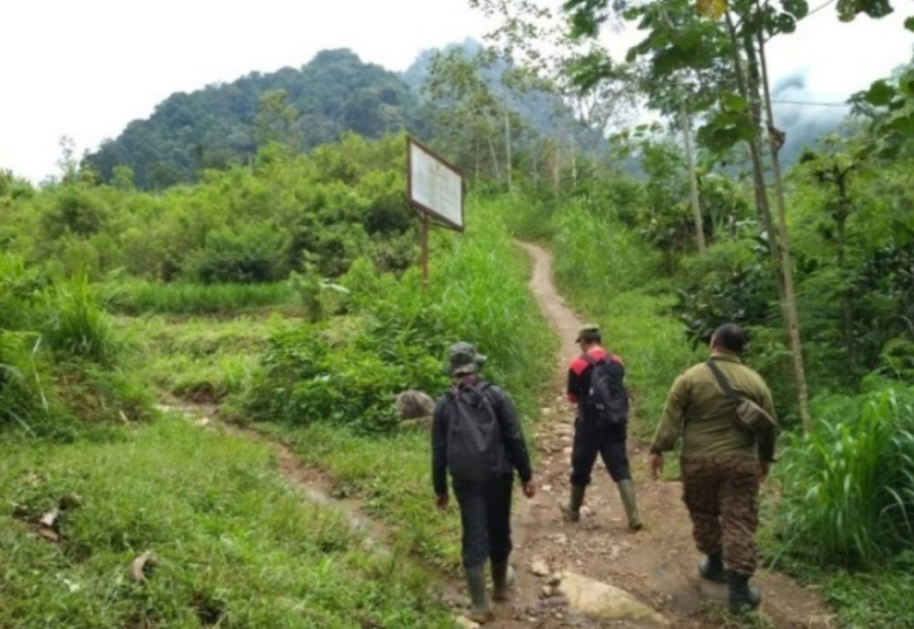
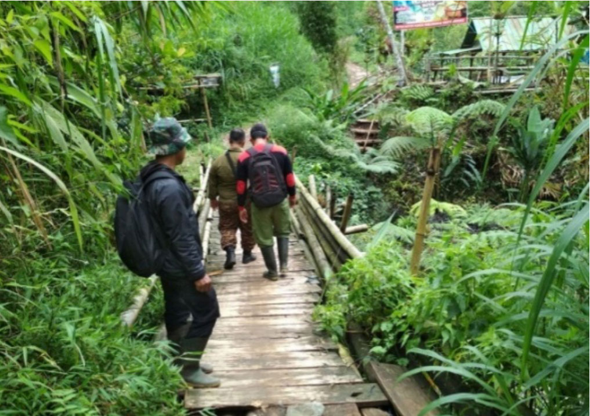
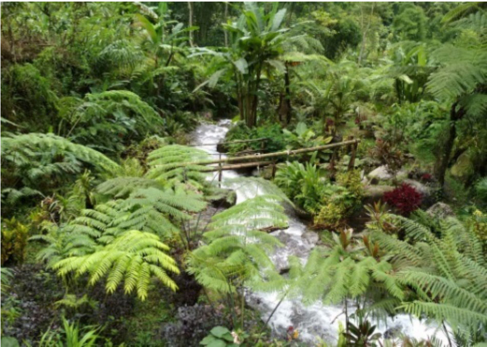
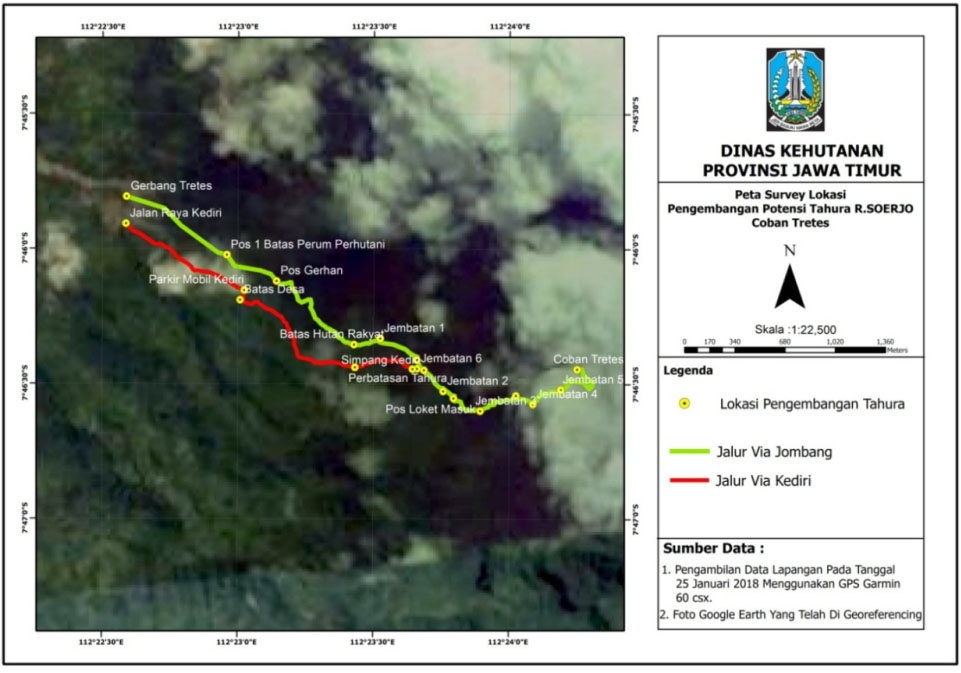

Udah sering denger daerah wisata Tretes belum? Ternyata di Tretes ada air terjunnya juga lho. Perlu kalian tau nih teman-teman, Air Terjun Tretes Merupakan air terjun tertinggi di Jawa Timur dengan ketinggian ± 170 m, terletak di kawasan Tahura Raden Soerjo, yang secara administratif berada di Desa Galeng Dowo Kec. Wonosalam, Kabupaten Jombang pada 7° 46’ 20,867” – 7° 46’ 41,543 LS dan 112° 23’ 39,485” – 112° 24’ 23,804” BT. Air terjun ini merupakan hulu sungai Sumber Watu Bonakah, memiliki panorama alam indah yang berada di Gunung Jurung Guah. Lokasi Air Terjun ada di ketinggian 1.172 mdpl.

Teman-teman yang ingin berlibur ke Air Terjun Tretes, bisa menggunakan kendaraan pribadi. Ada 2 jalan atau pintu masuk, yaitu Kabupaten Jombang, tepatnya Desa Galeng Dowo Kec. Wonosalam, dan Kab. Kediri tepatnya Desa Medowo, Kec. Kandangan. Dua jalan ini dikarenakan Air Terjun Tretes sendiri terletak di Kab. Jombang yang berbatasan dengan Kab. Kediri.
Jalur Jombang, kendaraan bisa lewat jalan raya Wonosalam – Kandangan. Dari jalan aspal, untuk menuju lokasi air terjun, harus melewati jalan setapak. Apabila kondisi jalan kering, maka motor bisa masuk, tetapi hanya sampai batas parkiran motor yang ada di lahan masyarakat. Dari jalan aspal ke air terjun, jaraknya 4,95 km dengan kondisi jalan relatif datar. Jalur Kediri, kendaraan bisa lewat jalan raya Kandangan – Wonosalam. Dari jalan aspal, untuk menuju lokasi air terjun, harus melewati jalan rabat / beton, kemudian jalan setapak yang melewati kawasan Perum Perhutani dan lahan masyarakat. Dari jalan aspal ke air terjun, jaraknya 5,70 km dengan kondisi jalan dari jalan beton masuk jalan setapak, jalan relatif menanjak. Masing-masing jalur (Jombang dan Kediri), akan bertemu di satu titik di dalam kawasan Tahura Raden Soerjo, tepatnya di lokasi dimana terdapat 3 warung yang buka hanya hari sabtu dan minggu.

Perlu kalian ketahui ya teman-teman, setelah masuk jalan setapak, ada 2 lokasi lahan parkir yang disediakan masyarakat di lahan mereka. Di jalan menuju air terjun, kita melewati jembatan Kali Sat, sepanjang 15 m. Teman-teman bisa menikmati jernihnya Kali Sat sambil berfoto. Selain itu, teman-teman juga bisa beristirahat sambil minum kopi di Warung Bu Dita dengan ditemani suara gemericik air sungai.
Bagi teman-teman yang ingin berlibur kesana cukup siapkan uang sebanyak Rp 10.000,- per orang per hari, kalau teman-teman adalah Wisatawan mancanegara cukup Rp 25.000,- per orang per hari. Ketinggian Pos Tahura adalah 1.027 m dpl. Menurut petugas di Pos tersebut, kondisi saat ini, jumlah pengunjung air terjun rata-rata 100 orang per minggu.

Dominasi vegetasi pada blok ini yaitu jenis Anggrung (Trema orientalis), Kukrup, Bambu, Grasak, Jelatang, Cembirit (Tabernaemontana macrocarpa) dengan tutupan lahan ± 80%. Satwa burung juga banyak ditemui di sana, diantaranya : Mantenan, Cucak Ijo, Cucak jenggot
Flora dan Fauna yang sering dijumpai, Tumbuhan Anggrung dan Burung Mantenan

Berikut jarak yang harus ditempuh untuk bisa sampai di lokasi air terjun :